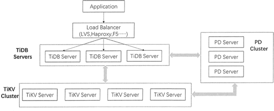
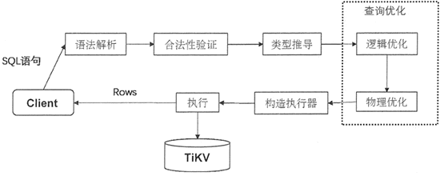

首页 > 编程笔记
TiDB数据库是什么？
TiDB 是一款结合了传统的关系型数据库和 NoSQL 数据库特性的新型分布式数据库。
TiDB 是基于 Google 公司的 Google Spanner / F1 论文设计的开源分布式数据库，而 Spanner/F1 是 Google 公司研发的可扩展的、多版本、全球分布式、可同步复制的数据库。
TiDB 是第一个把数据分布在全球范围内的系统，并且支持外部一致性的分布式事务。因此，TiDB 在设计时也追求无限的水平扩展，具备强一致性和高可用性，支持分布式事务的处理。
同时，TiDE 的目标是为在线交易处理（OnlineTransactional Processing, OLTP）和在线分析处理（Online Analytical Processing, OLAP）场景提供一站式的解决方案，支持MySQL数据库的数据轻松地向 TiDB 迁移，包括分库、分表后的 MySQL 集群也可通过工具进行实时迁移。
TiDB 的整体架构参考 Google Spanner/F1 的设计，也分为 TiDB 和 TiKV 上下两层。
TiDB 对应的是Google F1，是一层无状态的 SQL 层，负责与客户端交互，对客户端体现的是 MySQL 网络协议，且客户端需要通过一个本地负载均衡器将 SQL 请求转发到本地或最近的数据中心中的 TiDB 服务器。
TiDB 服务器负责解析用户的 SQL 语句，生成分布式的查询计划，并翻译成底层 Key-Value 操作发送给 TiKV，而 TiKV 则是真正存储数据的地方，对应的是 Google Spanner，是一个分布式 Key-Value 数据库，支持弹性水平扩展、 自动的灾难恢复和故障转移，以及 ACID 跨行事务。
另外，TiDB 架构采用 PD 集群来管理整个分布式数据库，PD 服务器在 TiKV 节点之间以 Region 作为单位进行调度，将部分数据迁移到新添加的节点上，完成集群调度和负载均衡。
TiDB 的集群架构如下图所示。
接下来具体介绍每个组件完成的功能。
在集群当中，首先多个客户端通过负载均衡组件将 SQL 请求转送至不同的 TiDB Server，TiDB Server 负责解析 SQL 请求，获取请求内容；然后进行合法性验证和类型推导；接着进行查询优化，包括逻辑优化和物理优化，优化完成后构建执行器；最后，把数据从 TiKV 中取出来进行计算，将最终结果反馈给客户端。
TiDB处理用户请求的流程如下图所示。
当集群中单个 TiDB Server 实例失效时，可以重启这个实例或部署一个新的实例来提高集群的可用性。
TiKV Server 将整个 Key-Value 空间分成很多段，每一段都是一系列连续的 Key，这一段称为 Region。
TiKV Server 将 Region 作为存储数据的基本单元，每个 Region 负责存储一定大小的数据。每个 TiKV Server 负责多个 Region，并使用 Raft 协议来为每个 Region 做备份，可用于保持数据的一致性和数据容灾， 通过 PD Server 进行负载均衡调度。
PD 还保存着整个集群 TiKV 的元信息，即某个 Key 存储在哪个 TiKV 节点上，负责为 TiDB Server 提供路由功能。
如果你想继续了解 TiDB 数据库，请猛击下面的链接：
TiDB 是基于 Google 公司的 Google Spanner / F1 论文设计的开源分布式数据库，而 Spanner/F1 是 Google 公司研发的可扩展的、多版本、全球分布式、可同步复制的数据库。
TiDB 是第一个把数据分布在全球范围内的系统，并且支持外部一致性的分布式事务。因此，TiDB 在设计时也追求无限的水平扩展，具备强一致性和高可用性，支持分布式事务的处理。
同时，TiDE 的目标是为在线交易处理（OnlineTransactional Processing, OLTP）和在线分析处理（Online Analytical Processing, OLAP）场景提供一站式的解决方案，支持MySQL数据库的数据轻松地向 TiDB 迁移，包括分库、分表后的 MySQL 集群也可通过工具进行实时迁移。
TiDB 架构
TiDB 具有无限水平扩展和高可用性的特点，通过简单地增加新节点即可实现计算和存储能力的扩展，轻松地应对高并发、海量数据的应用场景。TiDB 的整体架构参考 Google Spanner/F1 的设计，也分为 TiDB 和 TiKV 上下两层。
TiDB 对应的是Google F1，是一层无状态的 SQL 层，负责与客户端交互，对客户端体现的是 MySQL 网络协议，且客户端需要通过一个本地负载均衡器将 SQL 请求转发到本地或最近的数据中心中的 TiDB 服务器。
TiDB 服务器负责解析用户的 SQL 语句，生成分布式的查询计划，并翻译成底层 Key-Value 操作发送给 TiKV，而 TiKV 则是真正存储数据的地方，对应的是 Google Spanner，是一个分布式 Key-Value 数据库，支持弹性水平扩展、 自动的灾难恢复和故障转移，以及 ACID 跨行事务。
另外，TiDB 架构采用 PD 集群来管理整个分布式数据库，PD 服务器在 TiKV 节点之间以 Region 作为单位进行调度，将部分数据迁移到新添加的节点上，完成集群调度和负载均衡。
TiDB 的集群架构如下图所示。

从上图中可以看出，TiDB 集群架构主要由 TiDB 节点、PD（Placement Driver）节点和 TiKV 节点 3 个组件构成。通常 TiDB 集群架构推荐至少部署 3 个 TiKV 节点、3 个 PD 节点和 2 个 TiDB 节点，随着业务量的增长，可按照需求相应地添加 TiKV 或者 TiDB 节点。接下来具体介绍每个组件完成的功能。
TiDB Server
TiDB Server 完成与客户端的交互，兼容绝大多数的 MySQL 语法，属于 SQL 层。在集群当中，首先多个客户端通过负载均衡组件将 SQL 请求转送至不同的 TiDB Server，TiDB Server 负责解析 SQL 请求，获取请求内容；然后进行合法性验证和类型推导；接着进行查询优化，包括逻辑优化和物理优化，优化完成后构建执行器；最后，把数据从 TiKV 中取出来进行计算，将最终结果反馈给客户端。
TiDB处理用户请求的流程如下图所示。

TiDB Server 是无状态的，每个 TiDB Server 都是平等的，其本身并不存储数据，只负责计算，并可以进行无限水平扩展。当集群中单个 TiDB Server 实例失效时，可以重启这个实例或部署一个新的实例来提高集群的可用性。
TiKV Server
TiKV Server 主要负责数据的存储，是一个分布式的提供事务的键值（Key-Value）存储引擎，存储的是键值对（Key-Value pair），并按照 Key 的二进制顺序进行有序存储。TiKV Server 将整个 Key-Value 空间分成很多段，每一段都是一系列连续的 Key，这一段称为 Region。
TiKV Server 将 Region 作为存储数据的基本单元，每个 Region 负责存储一定大小的数据。每个 TiKV Server 负责多个 Region，并使用 Raft 协议来为每个 Region 做备份，可用于保持数据的一致性和数据容灾， 通过 PD Server 进行负载均衡调度。
PD Server
PD Server 是 TiDB 中的全局中心总控节点，它是以集群的方式部署的，负责整个集群的调度，如数据的迁移及负载均衡等，也负责全局 ID 的生成，以及全局时间戳 TSO 的生成等。PD 还保存着整个集群 TiKV 的元信息，即某个 Key 存储在哪个 TiKV 节点上，负责为 TiDB Server 提供路由功能。
如果你想继续了解 TiDB 数据库，请猛击下面的链接：
关注公众号「站长严长生」，在手机上阅读所有教程，随时随地都能学习。内含一款搜索神器，免费下载全网书籍和视频。

微信扫码关注公众号